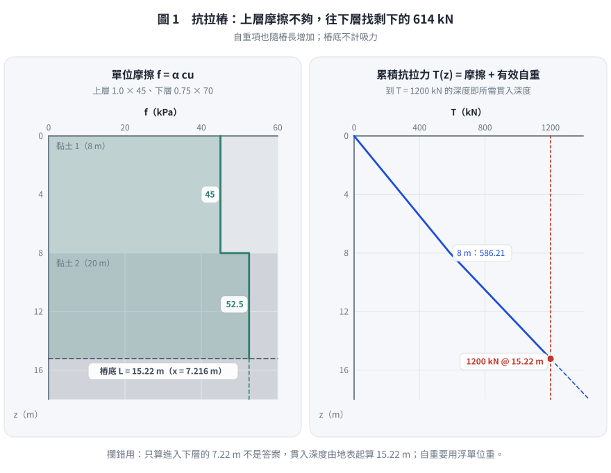

📄 題目正本：考卷原文・附圖・判讀清單（已確認）
SM-2012-3 題目正本
本檔只記錄考卷上寫了什麼、圖上畫了什麼，不含任何解法。解析見同資料夾
SM-2012-3.md。
判讀清單已確認（凍結）；本檔原則上不再修改（改動須回考卷原圖並記 log）。
| 項目 | 內容 |
|---|---|
| 考卷 | raw/exams/SM-2012_土壤力學與基礎設計.pdf 第 1 頁（全一頁），第三題 |
| 考年 | 民國 101 年（2012） |
| 配分 | 25 分 |
| 附圖 | 無 |
| 判讀狀態 | 已確認（2026-11-15 關卡一：使用者授權依建議判讀確認；轉錄 2026-11-15；PyMuPDF 110 dpi 全頁目視，以 PDF 文字層核對逐字原文；盲讀後才比對既有解析） |
1. 考卷原文（逐字）
三、有一厚 8 m 之黏土層，其不排水剪力強度為 45 kN/m²，黏土層之土壤單位重 $\gamma_{sat}$ = 18 kN/m³。其下方為一較堅實之黏土層，其不排水剪力強度為 70 kN/m²，土壤單位重亦為 $\gamma_{sat}$ = 18 kN/m³，厚度為 20 m。在此地層內擬採用直徑為 0.5 m 之混凝土樁以抵抗上浮力，樁之極限抗拉設計為 1200 kN，混凝土之單位重 $\gamma_{concrete}$ = 23 kN/m³。若上層黏土之附著因數為 α = 1，下層黏土之附著因數為 α = 0.75，則樁所需之貫入深度為多少？（25 分）
2. 考卷給的公式、附表與參數
- 上層黏土：厚 8 m、$s_u$ = 45 kN/m²、$\gamma_{sat}$ = 18 kN/m³、α = 1。
- 下層較堅實黏土：厚 20 m、$s_u$ = 70 kN/m²、$\gamma_{sat}$ = 18 kN/m³、α = 0.75。
- 樁：混凝土樁直徑 0.5 m、$\gamma_{concrete}$ = 23 kN/m³；用途為抵抗上浮力。
- 樁之極限抗拉設計 = 1200 kN。
- 沒有給：地下水位、樁頭位置（是否齊地表）、安全係數、樁自重是否計入抗拉、樁底吸力。
- 卷首注意事項：㈠可以使用電子計算器。㈡不必抄題，作答時請將試題題號及答案依照順序寫在試卷上，於本試題上作答者，不予計分。㈢本試題之相關公式、物理常數及設計參數未提及時，請自行合理推斷與假設。
3. 附圖
本題無附圖。
4. 判讀清單
| # | 項目 | 判讀 | 圖上／題文依據 | 把握 |
|---|---|---|---|---|
| 1 | 樁自重與浮力 | 題目給 $\gamma_{concrete}$ → 樁自重計入抗拉；樁的用途是「抵抗上浮力」且兩層土只給 $\gamma_{sat}$ → 推定地下水位在地表，樁自重用有效單位重 $23-\gamma_w$；不扣浮力（用 23）列為另一讀法。⚠ 待使用者複核 | 題文給 $\gamma_{concrete}$、未給水位 | 不確定（影響答案）；使用者授權依建議確認 |
| 2 | 1200 kN 的意義 | 所需極限抗拉力，不再乘安全係數 | 題文「樁之極限抗拉設計為 1200 kN」 | 確定（解讀） |
| 3 | 樁頭位置 | 樁頭齊上層黏土頂面（地表），貫入深度由地表起算 | 題文未提樁頭高程 | 確定（解讀） |
| 4 | 地層順序 | 地表起 0～8 m 上層黏土、8～28 m 下層較堅實黏土 | 題文「其下方」「厚度為 20 m」 | 確定 |
| 5 | 抗拉摩擦 | 兩層都用 α 法 $f = \alpha s_u$，上層 α = 1、下層 α = 0.75 | 題文 | 確定 |
| 6 | 樁底吸力 | 考卷未提，不計 | 題文 | 確定（解讀） |
| 7 | $\gamma_{sat}$ 的用途 | 兩層都只給 $\gamma_{sat}$ = 18；α 法不需要土壤單位重 | 題文 | 確定（解讀） |
| 8 | 所求 | 樁所需貫入深度（m）；須檢查是否落在下層 20 m 內 | 題文 | 確定 |
| 9 | 考卷沒有給 | 地下水位、樁頭位置、安全係數、$\gamma_w$ | 全題 | 確定 |
轉錄：2026-11-15（SM-U2-2 題目正本推廣・批 1）
確認：2026-11-15 使用者授權依建議判讀確認（SM-U2-2 題目正本推廣・批 1，關卡一；使用者指示「要我確認的請依你建議」）
考題編號：SM-2012-3
主分類： SM-U2-2 深基礎之支承力與沉陷量
副分類： 無
分析法： 總應力法
標籤： 樁基承載力 抗拔力 α法 摩擦力 附著因數 不排水剪力強度
1. 題目（考卷原文見題目正本）
考卷原文、公式／附表、附圖與判讀清單（已確認）見
SM-2012-3-problem.md。本節只列解題時最容易讀錯的地方與本解使用的記號；題意以題目正本為準。
常見誤讀
| 項目 | 正確判讀 | 常見誤讀 |
|---|---|---|
| 樁自重與浮力 | 樁自重計入抗拉；用途是「抵抗上浮力」且土層只給 $\gamma_{sat}$ → 推定水位在地表，自重用 $23-\gamma_w$（題目正本 #1，已確認；⚠ 待使用者複核） | 不計自重，或用 23 不扣浮力 |
| 1200 kN | 所需極限抗拉力，不再乘安全係數（#2） | 再乘 FS |
| 貫入深度起算 | 樁頭齊地表，貫入深度由上層黏土頂起算（#3） | 只算進入下層的長度 |
| 樁底吸力 | 考卷未提，不計（#6） | 加計樁底抗力 |
本解記號： $T_{ult}$ 極限抗拉力；$\alpha$ 附著因數；$c_u$ 不排水剪力強度；$W'_p$ 樁有效自重；$L$ 貫入深度。
2. 考題核心精神與出題者意圖 (Core Concepts & Examiner's Intent)
本題旨在測驗考生對於深基礎（基樁）抗拔承載力（Uplift Capacity）之計算能力。
- 核心觀念為：基樁之極限抗拔力由樁身與土壤間之極限表面摩擦力（Skin Friction）及基樁之有效自重（Effective Weight）所共同提供。
- 在黏土層中，採用總應力分析法（$\alpha$ 法）來估計樁與土壤間的附著力（Adhesion）。
- 出題者亦想測驗考生是否理解在飽和地層中（題目給定 $\gamma_{sat}$），基樁需受水浮力作用，應以「浮單位重（或有效單位重）」來計算其抵抗上拔的自重貢獻。
3. 解題戰略地圖與陷阱分析 (Strategic Roadmap & Trap Analysis)
-
確認力學平衡機制：
極限抗拔力 $T_{ult} = Q_s + W'_p$。
其中 $Q_s$ 為總抗拔摩擦力，$W'_p$ 為基樁之有效自重。 -
分層計算樁身摩擦力：
- 上層黏土提供之摩擦力 $Q_{s1} = \alpha_1 c_{u1} \times (\pi D) \times H_1$
- 假設樁需貫入下層黏土深度 $x$（即總樁長 $L = 8 + x$），下層黏土提供之摩擦力 $Q_{s2} = \alpha_2 c_{u2} \times (\pi D) \times x$
- 計算基樁自重貢獻：
- 題目給定土壤為 $\gamma_{sat}$，合理推定地下水位在地表，故樁身全部位於水下。
- 樁自重抵抗力應扣除水浮力，使用有效單位重 $\gamma'_{c} = \gamma_c - \gamma_w$ 乘上樁體積計算 $W'_p$。
- 解未知數：
- 將已知值代入 $T_{ult}$ 關係式，求解貫入第二層的深度 $x$，進而求得總貫入深度 $L$。
陷阱分析：
- 陷阱 1：未扣除水浮力。題目未明言地下水位高度，但提供的是 $\gamma_{sat}$，故在水下環境中抗拔樁必定會受到水向上浮力的作用，計算樁自重時須扣除水浮力（使用 $\gamma'_c = 23 - 9.81 = 13.19 \text{ kN/m}^3$）。若直接用 $\gamma_c = 23$ 會高估抗拔力，導致求出的樁長偏短。
- 陷阱 2：誤加樁端承載力。抗拔力僅由表面摩擦力與自重提供，底部並無承載力。另在極短期不排水情況下，樁底或許能產生負壓（吸力），但一般設計上偏於保守皆不計入樁底抗拔力。
3.5 變數層次分析 (Variable Hierarchy Analysis)
最終目標
求出能提供 1200 kN 極限抗拔力之基樁總貫入深度 $L$。
本題關鍵公式（依計算順序）
- 樁身周長與截面積：$p = \pi D$，$A_p = \frac{\pi}{4} D^2$
- 第一層黏土表面摩擦力：$Q_{s1} = \alpha_1 \cdot c_{u1} \cdot p \cdot H_1$
- 樁之有效單位重：$\gamma'_c = \gamma_c - \gamma_w$
- 極限抗拔力平衡方程式（含第二層貫入深度 $x$）：$T_{ult} = \boxed{Q_{s1}} + \alpha_2 \cdot c_{u2} \cdot p \cdot x + \boxed{\gamma'_c} \cdot A_p \cdot (\boxed{H_1} + x)$
- 總貫入深度：$L = \boxed{H_1} + \boxed{x}$
L1：題目直接給定
- $D \mid 0.5 \text{ m} \mid$ 樁徑
- $H_1 \mid 8 \text{ m} \mid$ 第一層黏土厚度
- $c_{u1} \mid 45 \text{ kN/m}^2 \mid$ 第一層黏土不排水剪力強度
- $\alpha_1 \mid 1.0 \mid$ 第一層黏土附著因數
- $c_{u2} \mid 70 \text{ kN/m}^2 \mid$ 第二層黏土不排水剪力強度
- $\alpha_2 \mid 0.75 \mid$ 第二層黏土附著因數
- $\gamma_c \mid 23 \text{ kN/m}^3 \mid$ 混凝土樁單位重
- $T_{ult} \mid 1200 \text{ kN} \mid$ 極限抗拔設計力
L2：需知識點推導
幾何參數計算
- $p \mid p = \pi D \mid$
- $A_p \mid A_p = \frac{\pi}{4}D^2 \mid$
抗拔力組成計算
- $Q_{s1} \mid Q_{s1} = \alpha_1 c_{u1} p H_1 \mid$
- $\gamma'_c \mid \gamma'_c = \gamma_c - \gamma_w \mid$
- $x \mid T_{ult} = Q_{s1} + \alpha_2 c_{u2} p x + W'_p \mid$
總長度
- $L \mid L = H_1 + x \mid$
L3：深層知識（不懂就卡住）
- 地下水位與自重貢獻 $\mid$ 飽和土層中拔樁，水浮力會抵銷部分自重，因此樁身自重須以有效單位重 $\gamma'_c = \gamma_c - \gamma_w$ 計算。 $\mid$
4. 步驟化詳細計算過程 (Step-by-Step Detailed Calculation)
Step 1: 計算基樁之幾何參數
樁徑 $D = 0.5 \text{ m}$，因此：
- 樁身周長：$p = \pi D = 0.5\pi = 1.5708 \text{ m}$
- 樁截面積：$A_p = \frac{\pi}{4} D^2 = \frac{\pi}{4} (0.5)^2 = 0.19635 \text{ m}^2$
Step 2: 檢核第一層黏土所提供之極限抗拔力
題目土壤單位重給定飽和單位重 $\gamma_{sat}$，合理推定地下水位位於地表。
樁體位於水下，其有效單位重為（取 $\gamma_w = 9.81 \text{ kN/m}^3$）：
$$ \gamma'_c = \gamma_c - \gamma_w = 23 - 9.81 = 13.19 \text{ kN/m}^3 $$
若樁僅貫穿第一層黏土（假設 $L = 8 \text{ m}$），其提供之極限抗拔力為：
- 表面摩擦力：$Q_{s1} = \alpha_1 c_{u1} p H_1 = 1.0 \times 45 \times (0.5\pi) \times 8 = 180\pi \approx 565.49 \text{ kN}$
- 樁有效自重：$W'_{p1} = \gamma'_c A_p H_1 = 13.19 \times 0.19635 \times 8 \approx 20.72 \text{ kN}$
- 總抗拔力：$T_{ult,1} = Q_{s1} + W'_{p1} = 565.49 + 20.72 = 586.21 \text{ kN} < 1200 \text{ kN}$
由此可知，第一層黏土不足以提供所需之抗拔承載力，樁必須貫入第二層黏土。
Step 3: 設樁貫入第二層黏土深度為 $x$，建立極限抗拔力方程式
樁總長度為 $L = 8 + x$。
-
第二層提供之表面摩擦力：
$$ Q_{s2} = \alpha_2 c_{u2} p x = 0.75 \times 70 \times (0.5\pi) \times x = 26.25\pi x \approx 82.467 x \text{ kN} $$ -
樁身總有效自重（總長 $L$）：
$$ W'_p = \gamma'_c A_p L = 13.19 \times 0.19635 \times (8 + x) = 2.590(8 + x) = 20.719 + 2.590x \text{ kN} $$
根據極限抗拔力公式：
$$ T_{ult} = Q_{s1} + Q_{s2} + W'_p $$
代入已知數值：
$$ 1200 = 565.487 + 82.467x + (20.719 + 2.590x) $$
整理得：
$$ 1200 = 586.206 + 85.057x $$
$$ 85.057x = 613.794 $$
$$ x = 7.216 \text{ m} $$
Step 4: 計算總貫入深度
$$ L = H_1 + x = 8 + 7.216 = 15.216 \text{ m} $$
故所需之總貫入深度為：
$$ \boxed{L = 15.22 \text{ m}} $$

圖 1 累積抗拉力隨深度增加，到 1200 kN 的深度就是貫入深度。攔下「只答進入下層的 7.22 m」與「自重項漏了也隨 $x$ 增加」的錯誤。
5. 關鍵爭議點與進階探討 (Critical Issues & Advanced Discussion)
- 地下水位與水浮力之處理（有效自重 vs 總重）
- 題目給定黏土層為「飽和單位重（$\gamma_{sat}$）」，依一般工程實務判斷，若地層為飽和狀態，通常暗示地下水位位於地表附近。因此，拔樁時水會在樁底產生向上之水壓力，等效於對樁體積產生浮力，故在計算樁自重抵抗時，必須使用樁之「有效單位重（$\gamma'_c = \gamma_c - \gamma_w$）」。
- 若考場上擔心出題者僅想簡單考驗公式，未慮及浮力（即假定水不會進入基樁底部或為毛細作用飽和），則自重項改以總單位重計算：$W_p = 23 \times 0.19635 \times (8+x)$。代入計算後解得 $x = 6.879$ m、$L = 14.88$ m。
- 實務建議：在國家考試中，遇到 $\gamma_{sat}$ 即扣除水浮力是嚴謹且能展示物理概念深度的做法。建議如上文直接以水下有效自重計算，並可於試卷旁註記：「假設地下水位位於地表，抗拔自重以浮單位重計算；若不計浮力則 $L = 14.88\text{ m}$」，確保萬無一失。
- 基樁底部之吸力（Suction）
- 黏土在短期受拉狀態下，樁底可能會產生負孔隙水壓，帶來額外的抗拔能力。然而此力量隨時間消散且具高度不確定性，故依據深基礎設計規範，極限抗拔承載力計算中不計入樁底抵抗力（包含吸力）。本解答遵循此規範，僅計算樁身表面摩擦力與樁身自重。
- 自重處理的敏感度（2026-11-15 盲解比對補註）：主線（有效自重 $23-\gamma_w$）$L$ = 15.22 m；自重用 23 不扣浮力 14.88 m；完全不計自重 15.69 m；$\gamma_w$ 改取 10 仍為 15.22 m。考卷沒有給水位，「水位在地表」是由「抵抗上浮力」與 $\gamma_{sat}$ 推定（題目正本 #1）。
修正日期：2026-11-15（§1 改為指向題目正本 SM-2012-3-problem.md；§5 補註自重處理敏感度（盲解比對後補充，答案未變）；§4 Step 4 後 補解題圖解 figs/SM-2012-3-fig-1-uplift.svg；非勘誤）